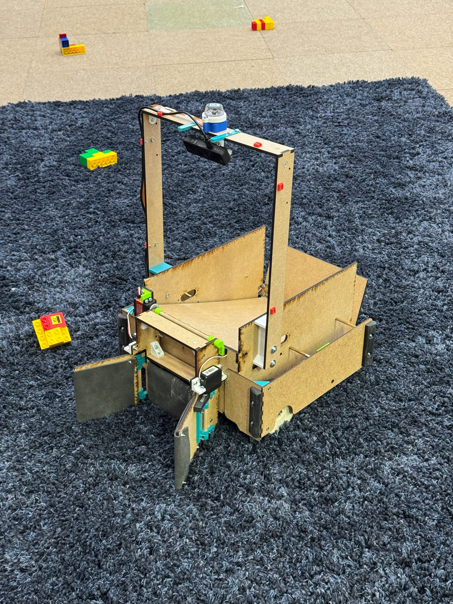

Interdisciplinary Robotics Competition

Overview
As part of the EPFL Interdisciplinary Robotics Competition 2026, I worked in a three-person team (Team ROBZ, Group 4) with Arnaud Buchel and Jan Juraszek to develop an autonomous robot capable of navigating an arena, collecting different LEGO Duplo assemblies, handling obstacles, and completing a sequence of tasks.
My main responsibility was the high-level software, including visual perception, beacon-based localization, navigation, and autonomous mission execution.
My Contributions
Computer Vision
Implemented two computer vision algorithms: one using an RGB camera to detect localization beacons, and another using an RGB-D camera to detect and locate obstacles and targets.
Both algorithms used a classical computer vision pipeline combining HSV color filtering, image processing (grayscale conversion, blurring, and Canny edge detection), and morphological operations.
Localization
Developed a beacon-based triangulation algorithm using relative angles and circle intersections. Combined it with an Extended Kalman Filter (EKF) to estimate the robot's pose.
Navigation
Implemented path planning using the A* algorithm and integrated navigation decisions into the robot's high-level controller.
Mission Execution
Structured the autonomous behavior as a Finite State Machine (FSM), coordinating perception, navigation, object collection, and task execution.
Technical Implementation
The high-level software ran in Python on a Raspberry Pi, handling vision and path planning. It communicated through a serial interface with an ESP32 microcontroller responsible for low-level motor control and sensor monitoring.
I implemented the high-level software from scratch in Python, without relying on pre-built robotics or path-planning libraries, to maintain control over the algorithms and their integration.
- Modular software architecture written in Python and running on a Raspberry Pi.
- Camera-based perception for target detection and beacon-based localization.
- Extended Kalman Filter (EKF) for sensor fusion and improved pose estimation.
- A* algorithm for path planning across the arena.
- Finite State Machine (FSM) coordinating mission logic, object collection, storage, and release.
- Serial communication between the Raspberry Pi and the ESP32 microcontroller.
Competition Video
Watch our robot in action during the competition.
Results
Our team, ROBZ, finished in 1st place in the EPFL Interdisciplinary Robotics Competition 2026.
The project provided hands-on experience in system architecture, sensor fusion, real-time vision processing, and hardware-software integration under competitive constraints.
It also strengthened my skills in project management, risk analysis, and teamwork.